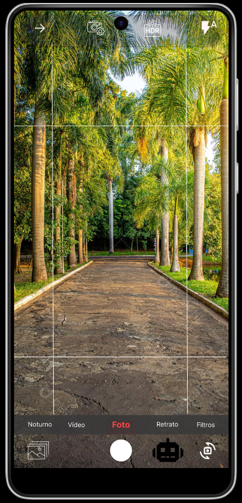
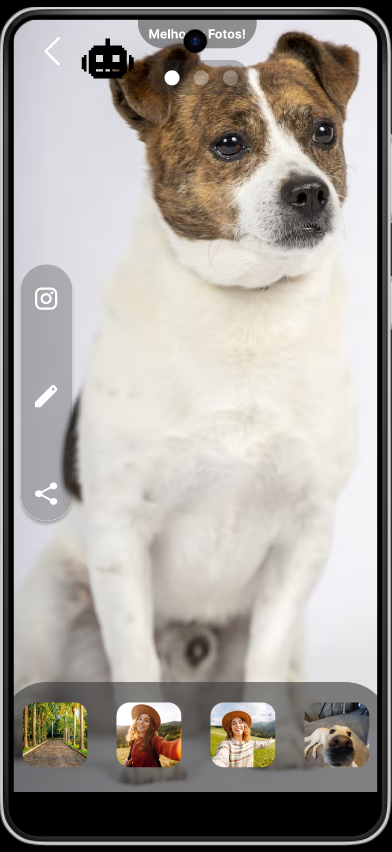
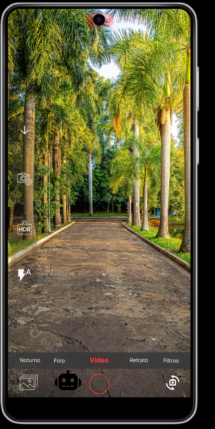

Veja · Entenda · Aprenda

O JOVI AI Vision analisa automaticamente cada sequência de imagens e seleciona a foto mais nítida. Filtros otimizados garantem que o quadro ou slide seja sempre legível.

Em tempo real, a IA identifica os limites do slide e sugere o enquadramento ideal. Correção automática de iluminação mesmo em salas escuras.
Algoritmos de visão computacional ajustam o foco automaticamente no texto. De fórmulas complexas a textos extensos — a câmera entende e adapta.